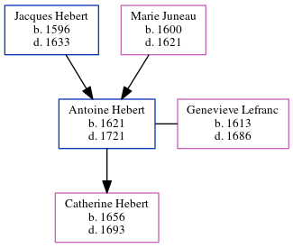

Antoine Hebert 1621 - 1721
[ Home ] | [ Calendar ] | [ Surnames Index ] | [ Census Index ] | [ Family History ]The child of Jacques Hebert and Marie Juneau, Antoine Hebert, the 10 times great-grandfather of Michele Copp (née Phillips), was born in Touraine, Indre-et-Loire, Centre, France in 16211, and was orphaned at the age of 12 following the death of his mother in 1621 and father in 1633.
He married Genevieve Lefranc (with whom he had 1 child, Catherine) in Ac in 16451
He died in 1721 in Port Royal, , Nova Scotia, Canada.
Parents
- Jacques was born in 1596
- Marie was born in 1600
Children
- Catherine was born in 1656
Citations
- U.S. and International Marriage Records, 1560-1900 Online publication - Provo, UT, USA: The Generations Network, Inc., 2004.Original data - This unique collection of records was extracted from a variety of sources including family group sheets and electronic databases. Originally, the information was deriv
Family Tree
Generated by ged2site. Last updated on Jun 6, 2024